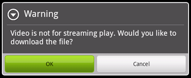
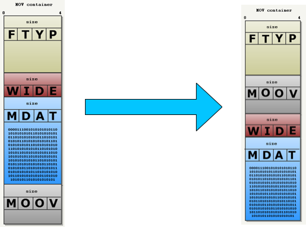
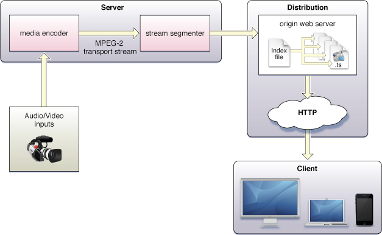
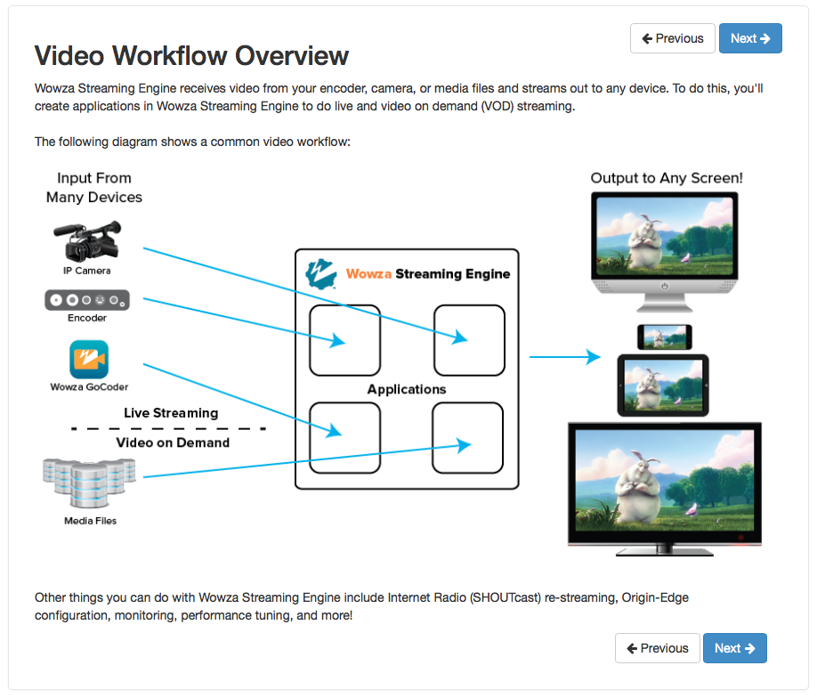
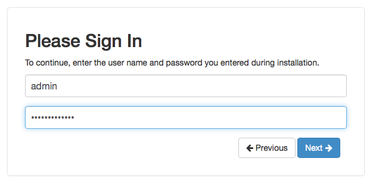
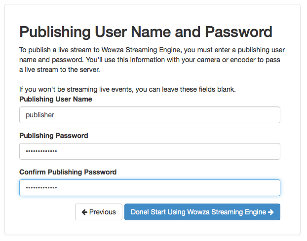
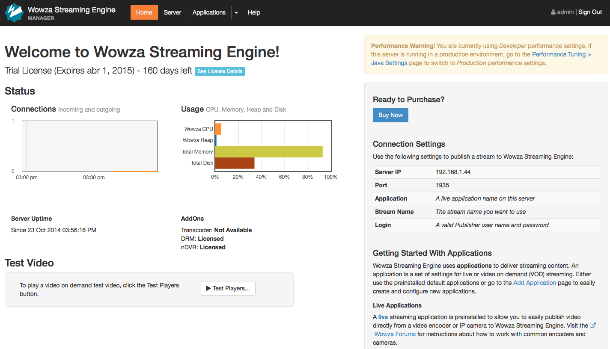
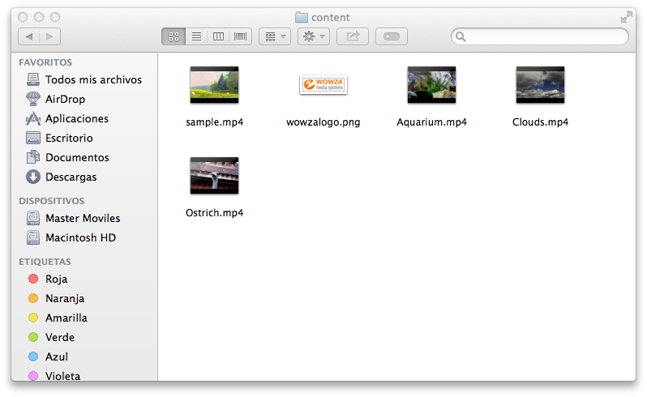
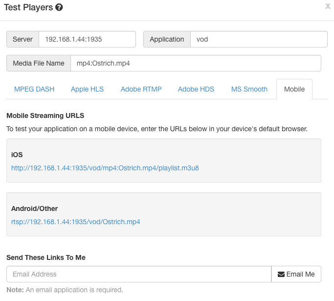

Sistemas de difusión de medios¶
En los dispositivos móviles podemos reproducir tanto medios almacenados localmente en el dispositivos, como medios a los que accedemos de forma remota. Para tener vídeo local podemos copiarlo directamente al espacio de almacenamiento del dispositivo o bien distribuirlo junto con nuestras aplicaciones. Esto puede ser conveniente para vídeos de escaso tamaño que no van a cambiar a lo largo del tiempo, pero en el resto de casos será más apropiado contar con sistemas que suministren de forma remota estos contenidos multimedia a nuestros dispositivos. Vamos a estudiar los siguientes mecanismos:
- Podcasts
- Descarga progresiva
- Streaming
Podcast¶
Los podcasts surgieron como el mecanismo de difusión de medios para el iPod. De hecho, su nombre viene de iPod + broadcast.
Un podcast se define como un canal que contiene contenido episódico multimedia. Estos episodios pueden ser audios, vídeos, o incluso libros. El creados del podcast podrá añadir nuevos episodios al canal en cualquier momento.
Como usuarios podemos suscribirnos a un podcast en nuestros dispositivos. Esto hará que cuando se publique un nuevo episodio éste se descargue de forma automática en nuestro dispositivo en el momento que el que contemos con una conexión Wi-Fi o por cable. De esta forma podremos reproducirlo offline posteriormente, sin necesidad de consumir datos móviles.
Formatos de un podcast¶
En un podcast podemos publicar medios en diferentes formatos. En el caso del audio los formatos soportados son:
.m4a(audio/x-m4a).mp3(audio/mpeg)
Para el vídeo tenemos:
.mov(video/quicktime).mp4(video/mp4).m4v(video/x-m4v)
Y por último, en el caso de libros y documentos encontramos:
.pdf(application/pdf).epub(document/x-epub)
Creación de un podcast¶
Un podcast se define como un fichero XML con formato de feed RSS. En este fichero la etiqueta principal es <channel>, que define el propio canal del podcast. Dentro de esta etiqueta tendremos información general sobre el canal, y contendrá un conjunto de episodios, cada uno de ellos definido mediante la etiqueta <item>:
<?xml version="1.0" encoding="UTF-8"?>
<rss xmlns:itunes="http://www.itunes.com/dtds/podcast-1.0.dtd" version="2.0">
<channel>
<!-- Informacion del canal -->
<item>
<!-- Informacion del item -->
</item>
<item>
<!-- Informacion del item -->
</item>
...
</channel>
</rss>
La información general que debemos proporcional del canal es la siguiente:
<title>Servicios Multimedia para Dispositivos Móviles</title>
<link>http://jtech.ua.es/podcast/index.html</link>
<language>en-us</language>
<copyright>℗ & © 2012 Miguel Ángel Lozano</copyright>
<itunes:subtitle>Podcast sobre dispositivos móviles</itunes:subtitle>
<itunes:author>Miguel Ángel Lozano</itunes:author>
<itunes:summary>Resumen</itunes:summary>
<description>Descripción</description>
<itunes:owner>
<itunes:name>Miguel Ángel Lozano</itunes:name>
<itunes:email>malozano@ua.es</itunes:email>
</itunes:owner>
<itunes:image href="http://jtech.ua.es/podcast/ios.jpg" />
<itunes:category text="Technology">
<itunes:category text="Gadgets"/>
</itunes:category>
<itunes:category text="TV & Film"/>
De cada item deberemos proporcionar la siguiente información:
<item>
<title>Episodio 1</title>
<itunes:author>Miguel Ángel Lozano</itunes:author>
<itunes:subtitle>Características de los dispositivos</itunes:subtitle>
<itunes:summary>
Redes de telefonía móvil. Tipos de dispositivos. Plataformas de desarrollo
</itunes:summary>
<itunes:image href="http://www.jtech.ua.es/images/logo-especialista-moviles_mini.png" />
<enclosure url="http://localhost/~malozano/episodio1.mp3" length="169608456" type="audio/mpeg" />
<guid>http://localhost/~malozano/episodio1.mp3</guid>
<pubDate>Mon, 5 Mar 2012 19:00:00 GMT</pubDate>
<itunes:duration>1:28:20</itunes:duration>
<itunes:keywords>dispositivos, moviles, redes, desarrollo</itunes:keywords>
</item>
Debemos prestar especial atención a <enclosure> y <guid>. En el primero especificaremos la URL donde está publicado el contenido multimedia y sus datos (tipo y longitud del contenido). En el segundo deberemos indicar un identificador único para cada episodio. Si introducimos dos episodios con el mismo guid las aplicaciones pensarán que se trata del mismo episodio, y no lo mostrarán correctamente. Una buena práctica es utilizar la URL del medio como guid.
Subscripción a un podcast¶
Existen diferentes aplicaciones en las que podemos suscribirnos a podcasts, aunque la principal de ellas es iTunes. Con la opción Archivo > Suscribirse a un podcast ... podremos introducir la URL del feed del podcast al que nos queremos suscribir.
Encontramos otras aplicaciones como iVoox en las que también podemos suscribirnos a podcasts desde cualquier dispositivo.
Una vez hemos creado un podcast podemos enviar la URL del feed a Apple para solicitar que lo incluya en el catálogo de iTunes Store.
Descarga progresiva¶
Mediante podcasts podemos suministrar vídeo a dispositivos móviles para ser reproducido offline en cualquier momento. Sin embargo muchas veces necesitaremos reproducir de forma online vídeos que no hayan sido descargados previamente. Una forma sencilla de hacer esto es simplemente publicar el vídeo en un servidor web y descargarlo mediante HTTP.
Al ser los vídeos ficheros de gran tamaño, la descarga puede durar un tiempo considerable. Esta espera para empezar a reproducir el vídeo puede resultar algo prohibitivo para el uso de nuestra aplicación. Para evitar este problema lo que podemos hacer es reproducir el vídeo durante la descarga. Esto es lo que se conoce como descarga progresiva o pseudostreaming.
Para utilizar descarga progresiva normalmente basta con publicar los vídeos en un servidor web. Sin embargo, para garantizar máxima compatibilidad deberemos tener en cuenta algunos factores sobre la estructura del fichero.
Átomos del fichero de vídeo¶
Para poder reproducir el vídeo de forma progresiva el reproductor debe tener la información sobre el vídeo (índice del fichero) antes de empezar a recibir el contenido.
Los formatos de fichero mov y mp4 constan de una serie de partes o átomos:
ftyp: Formato de la películamoov: Contiene metadatoswide: Permite ampliarmoovmdat: Contiene datos de la película
Es importante que el bloque de metadatos moov se obtanga antes de empezar a leer el bloque de datos mdat para así poder reproducir el vídeo durante la descarga, pero no siempre el átomo moov está antes que mdat en el fichero. Muchas aplicaciones al guardar este formato esperan al final para escribir el índice del fichero, cuando ya está todo el contenido almacenado, y por lo tanto dejan moov al final.
Para la mayoría de reproductores actuales tener el bloque moov al final del fichero no supone un problema, ya que son capaces de solicitar al servidor que les devuelva en primer lugar los últimos bloques del fichero, para así poder reproducir el vídeo en descarga progresiva.
Sin embargo, para algunos reproductores no es posible hacer esto. Para que la descarga progresiva funcione en estos casos deberemos mover el bloque moov al principio del fichero. Esto es lo que se conoce como Faststart.
Si no realizamos la reordenación, en estos reproductores (normalmente de versiones antiguas de Android) nos aparecerá un mensaje como el siguiente:

Al no poder reproducir el vídeo durante la descarga nos pregunta si queremos descargarlo para reproducirlo en local.
Faststart¶
Faststart consiste en mover el átomo moov al comienzo de un fichero de vídeo para poderlo reproducir en descarga progresiva en cualquier navegador.

Es posible aplicar faststart sin tener que recodificar el vídeo, simplemente tenemos que reordenar los datos. Podemos aplicarlo con ffmpeg:
ffmpeg -movflags faststart
También existen herramientas como QT Index Swapper (http://renaun.com/blog/code/qtindexswapper/) que nos permiten realizar este cambio.
Desventajas de la descarga progresiva¶
Con la descarga progresiva podemos reproducir un vídeo conforme se descarga del servidor, sin tener que esperar a que finalice la descarga, y pudiendo utilizar cualquier servidor web para su publicación.
Sin embargo, mientras estemos viendo el vídeo el fichero se descargará normalmente a una velocidad mayor a la velocidad de reproducción. Esto puede suponer que viendo unos pocos segundos de vídeo hayamos descargado una gran cantidad de datos. Esto puede ser un problema importante cuando accedamos a vídeo desde la red de datos móviles, que tiene un límite de descarga acotado. Por lo tanto, para vídeos de gran tamaño deberemos evitar este práctica.
Por ejemplo, aquellas aplicaciones iOS que accedan mediante descarga progresiva a vídeos de más de 10 minutos o más de 5Mb a través de la red de datos móviles serán rechazadas por Apple y no podrán ser publicadas en la App Store. En estos casos deberemos acceder a los vídeos mediante streaming
Streaming¶
Los sistemas de streaming consisten en enviar al cliente pequeños fragmentos de vídeo conforme estos se necesiten para la reproducción. En el cliente se recibirán y se reproducirán estos fragmentos pero, al contrario que en el caso de la descarga progresiva, el vídeo completo no se descargará en el dispositivo. Los fragmentos se irán desechando conforme no se necesiten. De este modo el dispositivo descargará sólo los datos de vídeo que se estén reproduciendo, y no el fichero entero.
Deberemos utilizar un sistema de streaming en los siguientes casos:
- Cuando tengamos Vídeo Bajo Demanda (VOD) con ficheros de gran tamaño. Servirlos mediante streaming hará que sólo se descargue lo que se vaya a reproducir. Si no se reproduce el vídeo entero, no tendrá que bajar todo el fichero.
- Cuando tengamos emisiones de vídeo en directo. En este caso es imposible enviar el vídeo mediante un fichero, ya que el fichero se está grabando en este momento. Lo único que se puede enviar son los fragmentos del vídeo conforme estos son capturados.
Protocolos de streaming¶
Existen diferentes protocolos para ofrecer vídeo mediante streaming:
- RTSP (Real Time Streaming Protocol): Funciona como un reproductor de vídeo, con comandos para reproducir, pausar y parar. En lugar de tener comandos como
GEToPOSTde HTTP, tenemos otros comandos comoPLAY,PAUSEo `STOP``. Fue desarrollado por RealNetworks. - RTMP: Protocolo propietario desarrollado por Macromedia/Adobe, e implementado en Flash Media Server. La especificación hizo pública en 2009, permitiendo así integrarlo en otras redes de distribución de contenidos (CDNs). Este protocolo fue diseñado para emitir vídeo Flash, y se utiliza por ejemplo en aplicaciones como YouTube. Encapsula vídeo FLV y audio MP3 o AAC.
- HLS (HTTP Live Streaming): Procolo desarrollado por Apple. Es el sistema que Apple recomienda y el que debemos utilizar en las aplicaciones iOS. Se basa en particionar los vídeos en una serie de pequeños fragmentos, y publicarlos en un servidor web HTTP convecional.
La mayor diferencia entre los protocolos anteriores es que tanto RTSP como RTMP requieren servidores especiales, sin embargo, HLS puede funcionar sobre cualquier servidor web al funcionar sobre HTTP. Esto tiene también la ventaja de que HLS tendrá una mayor compatibilidad con los distintos nodos de la red (gateways, routers, etc).
RTMP tiene la ventaja de que soporta multicast (un mismo stream sirve para varios clientes), cosa que HTTP lo permite. Además, RTMP es más granular. Envía pequeños paquetes, y permite reanudar el vídeo en el lugar que se quedó con mayor precisión. Para utilizar RTMP será recomendable utilizar las tecnlogías Adobe Air.
A continuación mostramos la compatibilidad de cada protocolo con las diferentes plataformas móviles:
- HLS: iOS y Android 3.0 o superior.
- RTSP: Android.
- RTMP: Adobe Air (multiplataforma)
HTTP Live Streaming¶
HTTP Live Streaming es un protocolo de streaming desarrollado por Apple que se basa en segmentar el vídeo en pequeños fragmentos, y publicarlos en un servidor web ordinario para su descarga mediante HTTP.
Podrá utilizarse tanto para VOD como para emisiones en directo. Simplemente necesitaremos una aplicación que codifique y segmente el vídeo. En caso del VOD, podremos segmentar el vídeo offline y copiar los fragmentos al servidor web. El caso de tener vídeo en directo, deberemos codificar, generar segmentos, y publicarlos en el servidor conforme se realiza la captura del vídeo.

Apple nos proporciona las herramientas mediafilesegmenter y mediastreamsegmenter que nos permiten segmentar VOD y vídeo en directo respectivamente. También podremos hacerlo mediante aplicaciones como VLC o ffmpeg.
Formato de vídeo en HLS¶
En HLS el vídeo se particiona en una serie de segmentos con las siguientes características:
- Formato de fichero
.ts - Vídeo H.264
- Audio AAC
Todos estos segmentos se integran mediante un índice (playlist) con formato M3U8. Esta playlist tiene la siguiente estructura:
#EXTM3U
#EXT-X-TARGETDURATION:10
#EXT-X-MEDIA-SEQUENCE:1
#EXTINF:10,
http://media.example.com/segment0.ts
#EXTINF:10,
http://media.example.com/segment1.ts
#EXTINF:10,
http://media.example.com/segment2.ts
#EXT-X-ENDLIST
En este caso tenemos un vídeo con 3 segmentos, cada uno de ellos de 10 segundos de duración. Para publicar el vídeo, tendremos que publicar en el servidor web los segmentos y la playlist:
- segment0.ts
- segment1.ts
- segment2.ts
- video.m3u8
El vídeo completo tendrá por lo tanto una duración se 30 segundos. Para reproducir el vídeo deberemos especificar la dirección donde está el playlist. Por ejemplo, si tenemos la playlist publicada en http://media.example.com/video.m3u8, bastará con introducir esta URL en Safari para reproducirlo.
En caso de tener VOD bastará con segmentar el vídeo con alguna herramienta y publicar los ficheros generados en un servidor web. Para emisiones en directo deberemos tener ejecutándose la herramienta de segmentación, que irá generando segmentos del vídeo capturado y los irá publicando en el servidor, modificando la playlist en cada momento.
Generación de HLS con ffmpeg¶
Podemos utilizar la herramienta ffmpeg para generar vídeo HLS. A continuación mostramos ejemplos para generar vídeo con diferentes perfiles de calidad.
Perfil bajo:
ffmpeg -i entrada.mp4 -c:a aac -ac 1 -b:a 32k -ar 22050
-c:v h264 -profile:v baseline -level 3.0 -b:v 200K -r 12 -g 36
-f hls -hls_time 10 -hls_list_size 999 -s 320x180 low.m3u8
Perfil medio:
ffmpeg -i entrada.mp4 -c:a aac -ac 2 -b:a 64k -ar 44100
-c:v h264 -profile:v baseline -level 3.1 -b:v 600K -r 24 -g 72
-f hls -hls_time 10 -hls_list_size 999 -s 640x360 medium.m3u8
Perfil alto:
ffmpeg -i entrada.mp4 -c:a aac -ac 2 -b:a 96k -ar 44100
-c:v h264 -profile:v main -level 3.1 -b:v 1500K -r 24 -g 72
-f hls -hls_time 10 -hls_list_size 999 -s 1280x720 high.m3u8
Bitrate adaptativo (ABR)¶
En el caso anterior hemos creado diferentes versiones del vídeo HLS dirigidas a distintos anchos de banda. Este protocolo nos permite integrar todas estas versiones en una única playlist, para que así el sistema seleccione la más adecuada en función del ancho de banda disponible. De esta forma, si empezamos con un perfil de alta calidad y a mitad se produce una caída del ancho de banda en la conexión, automáticamente saltará a una versión con una calidad adecuada al nuevo ancho de banda disponible.
Tendremos lo que se conoce como una variant playlist. En ella indicamos las distintas playlists disponibles para las diferentes versiones, y el ancho de banda mínimo necesario para cada una de ellas:
#EXTM3U
#EXT-X-STREAM-INF:PROGRAM-ID=1,BANDWIDTH=200000
low.m3u8
#EXT-X-STREAM-INF:PROGRAM-ID=1,BANDWIDTH=600000
medium.m3u8
#EXT-X-STREAM-INF:PROGRAM-ID=1,BANDWIDTH=1500000
high.m3u8
Podemos generar con ffmpeg directamente una variant playlist a partir de un vídeo de la siguiente forma:
VIDSOURCE="video.mp4"
RESOLUTION="854x480"
BITRATE1="800000"
BITRATE2="600000"
BITRATE3="400000"
AUDIO_OPTS="-c:a libfaac -b:a 160000 -ac 2"
VIDEO_OPTS1="-s $RESOLUTION -c:v libx264 -b:v $BITRATE1 -vprofile baseline -preset medium -x264opts level=41"
VIDEO_OPTS2="-s $RESOLUTION -c:v libx264 -b:v $BITRATE2 -vprofile baseline -preset medium -x264opts level=41"
VIDEO_OPTS3="-s $RESOLUTION -c:v libx264 -b:v $BITRATE3 -vprofile baseline -preset medium -x264opts level=41"
OUTPUT_HLS="-hls_time 3 -hls_list_size 10 -hls_wrap 30 -start_number 1"
ffmpeg -i "$VIDSOURCE" -y -threads 4 \
$AUDIO_OPTS $VIDEO_OPTS1 $OUTPUT_HLS alto.m3u8 \
$AUDIO_OPTS $VIDEO_OPTS2 $OUTPUT_HLS medio.m3u8 \
$AUDIO_OPTS $VIDEO_OPTS3 $OUTPUT_HLS bajo.m3u8
Servidores de streaming¶
Existen diferentes servidores y servicios en la nube que nos permiten emitir vídeo bajo demanda y en directo en diferentes formatos, dando soporte a la práctica totalidad de dispositivos actuales.
Encontramos por ejemplo servicios en la nube como Zencoder (http://zencoder.com) y VideoCloud (http://videocloud.brightcove.com/).
También encontramos servidores que podemos instalar en nuestro propio equipo como Wowza Media Server (http://wowza.com/). Vamos a centrarnos en estudiar el uso de este servidor.
Configuración de Wowza Media Server¶
Para poder utilizar Wowza Media Server deberemos seguir los siguientes pasos:
-
El primer lugar debemos configurar un usuario y password para acceder al servidor. Para ello editamos el fichero
/Library/WowzaStreamingEngine/conf/admin.passwordy añadimos la siguiente linea:Con esto habremos creado un usuarioadmin mastermovilesadmincon passwordmastermoviles. -
Iniciamos el servidor, entrando en Aplicaciones > Wowza Streaming Engine y seleccionando Start Standalone Mode

- Podremos acceder al servidor desde un navegador utilizando la dirección
http://localhost:8088. La primera vez que accedamos veremos la siguiente pantalla de bienvenida:

- Pulsamos en Next, y nos mostrará el workflow del servidor:

- Pulsamos de nuevo en Next, y nos pedirá que introduzcamos los datos del usuario administrador del servidor. Introduciremos los datos que configuramos en el primer paso:

- A continuación nos pedirá que demos de alta un usuario con perfil de publisher. Este usuario será necesario para poder emitir video en directo a través del servidor:

- Una vez creado ese usuario, veremos la pantalla principal de Wowza. Esto es lo que veremos las próximas veces que arranquemos Wowza, al estar ya configurado:

Publicación de contenido VOD¶
Una vez configurado el servidor podremos añadir tanto emisiones en directo como contenido bajo demanda (VOD). Vamos a centrarnos en primer lugar en la forma de añadir contenido VOD.
Para añadir este tipo de contenido simplemente tenemos que copiar los videos que queramos publicar a la carpeta de contenido (Content) del servidor.
- Tenemos un enlace a esta carpeta desde el directorio principal de la aplicación:
- Entramos en la carpeta
Content, y copiaremos en ella todos los vídeos que queramos publicar:

- Una vez hecho esto, podremos acceder al contenido desde la web de Wowza. Para ello desde la página principal del servidor pulsaremos sobre Applications > vod:

- Con esto entraremos en la aplicación de VOD. En esta aplicación veremos un botón con el texto Test Players que nos permitirá acceder a una serie de reproductores de prueba para los vídeos publicados en la aplicación de VOD. Pulsando sobre este botón accederemos a ellos, y por ejemplo entraremos en el reproductor Apple HLS. Aquí introducir el nombre del fichero que queramos reproducir y verlo en el reproductor de prueba:

- En la pestaña Mobile el servidor nos mostrará los enlaces mediante los cuales podríamos reproducir los vídeos vía streaming en dispositivos móviles iOS y Android, mediante HLS y RTSP respectivamente:

Si abrimos estos enlaces desde el navegador de dispositivos que estén en una red desde la que tengan visibilidad de la IP del servidor podremos ver los vídeos publicados.
Acceso a Wowza mediante SSL¶
A partir de iOS 9 sólo se permite establecer conexiones mediante SSL (https) por motivos de seguridad. Aunque podemos añadir excepciones en nuestra aplicaciones para poder seguir accediendo mediante http, no es recomendable hacerlo. Vamos a ver a continuación la forma de configurar Wowza para poder acceder a los contenidos multimedia mediante SSL tal como se recomienda a partir de iOS 9.
Para poder configurar https en Wowza deberemos crearnos un certificado cuyo nombre (CN) coincida con el dominio a proteger. Por ejemplo, si nuestro contenido va a estar en eps.ua.es, deberemos crear un certificado con CN=eps.ua.es. Esto nos serviará para aseguramos de que no se está suplantando al servidor. Además, nuestro certificado deberá estar firmado por una autoridad de certificación (CA), como por ejemplo Verisign o Thawte.
Como alternativa, veremos también la posibilidad de convertirnos nosotros mismos en "autoridad de certificación", aunque en ese caso deberemos proporcionar al usuario nuestro certificado raíz para que lo instale en su dispositivo como certificado de confianza.
Una vez creado el certificado, se incluirá en Wowza y se habilitará un puerto de acceso mediante SSL utilizando dicho certificado.
Vamos a ver a continuación cómo realizar esta configuración paso a paso:
Creación del certificado¶
En primer lugar debemos crear el certificado para nuestro sitio web. Imaginemos que queremos proteger el sitio mastermoviles.eps.ua.es, donde tendremos instalado un servidor Wowza, y acceder a él mediante SSL garantizando que no ha sido suplantado por otro. Crearemos un par de claves pública-privada para Wowza de la siguiente forma:
keytool -genkey -keysize 2048 -alias wowza -keyalg RSA -keystore mastermoviles.eps.ua.es.jks
En el asistente para la creación de las claves, cuando nos pregunte por el Common Name (CN) es importante indicar mastermoviles.eps.ua.es, ya que debe coincidir con el dominio del sitio web a proteger.
Al crear el almacén de claves y el alias
wowza, que será la clave que utilice Wowza para establecer el canal SSL, deberemos especificar el mismo password para el almacén y para el alias.
Una vez hecho esto, crearemos una solicitud de certificado (CSR) para nuestra clave:
keytool -certreq -file mastermoviles.eps.ua.es.csr -alias wowza -keyalg RSA -keystore mastermoviles.eps.ua.es.jks
Esta solicitud podrá ser enviada a una autoridad de certificación para que nos proporcionen un certificado firmado por ellos correspondiente a nuestro par de claves. Como alternativa, vamos a ver cómo convertirnos en "autoridad de certificación" creando un certificado raíz autofirmado.
Autofirmar nuestro certificado¶
Si optamos por solicitar nuestro certificado firmado a una autoridad de certificación (CA) existente no será necesario realizar este paso.
En caso de trabajar en un ámbito de pruebas, o en un proyecto de ámbito cerrado, puede ser conveniente firmar nosotros mismos nuestro certificado, en lugar de solicitarlo a una CA, aunque en este caso a quienes conecten a nuestro sitio web les aparecerá como "No seguro", a no ser que se instalen y confíen en nuestro certificado raíz autofirmado.
Para crear este certificado autofirmado en primer lugar creamos el par de claves:
openssl genrsa -out eps.ua.es.key 2048
Tras esto, generamos el certificado autofirmado:
openssl req -x509 -sha256 -new -key eps.ua.es.key -out eps.ua.es.cer -days 730 -subj /CN=“eps.ua.es”
Este certificado deberá difundirse entre todos los que vayan a utilizar nuestra aplicación, para que lo instalen en sus dispositivos como certificado raíz de confianza. De no ser así, los certificados que firmemos con él tampoco serán validos.
Una vez tenemos el certificado raíz autofirmado, podemos firmar con él el certificado para nuestro sitio web:
openssl x509 -req -in mastermoviles.eps.ua.es.csr -out mastermoviles.eps.ua.es.cer -CAkey eps.ua.es.key -CA eps.ua.es.cer -days 365 -CAcreateserial -CAserial serial
Con esto obtenemos un certificado firmado por nosotros mismos. Si hubiésemos recurrido a una CA, nos habría proporcionado también este mismo fichero cer, pero en ese caso firmado por un certificado raíz en el que ya confían los diferentes dispositivos.
Incluir el certificado firmado en el almacen de claves¶
Una vez tenemos nuestro certificado firmado por una CA (o por un certificado raíz nuestro autofirmado), deberemos importar el certificado de la CA y nuestro certificado firmado por ella en nuestro almacén de claves.
En caso de haber creado un certificado raíz autofirmado, lo importamos en nuestro almacén de claves. En caso de haber obtenido el certificado de una CA, en su lugar importaremos el certificado puente de dicha CA:
keytool -import -alias root -trustcacerts -file eps.ua.es.cer -keystore mastermoviles.eps.ua.es.jks
Además también debemos importar en el almacén el certificado propio de nuestro sitio web:
keytool -import -alias wowza -trustcacerts -file mastermoviles.eps.ua.es.cer -keystore mastermoviles.eps.ua.es.jks
Con esto ya tendremos listo el almacen de claves para ser utilizado en Wowza.
Configuración del puerto seguro en Wowza¶
Una vez contamos con nuestro almacen de claves configurado para nuestro sitio web, podemos configurar un puerto seguro en Wowza para acceder a través de él al contenido mediante SSL. Para ello, en la consola de Wowza entramos en la pestaña Server y dentro de ella en Virtual Host Setup. Veremos la lista de puertos (Host Ports) activos actualmente. Si pulsamos el botón Edit podremos editar este lista o añadir nuevos puertos.
Para configurar un nuevo puerto que utilice SSL pulsamos sobre Add Host Port... e introducimos la siguiente información:
- Name: Indicamos un nombre para identificar el puerto en el entorno, por ejemplo "Default SSL Streaming.
- Type: Como tipo indicamos que será un puerto para la aplicación de Streaming.
- IP Adresses: Indicamos que se puede acceder desde cualquier IP, con "*".
- Port(s): El puerto al que conectaremos mediante SSL. Si el puerto no seguro por defecto es 1935, podríamos utilizar para SSL por ejemplo el puerto 1936.
- Enable SSL/StreamLock: Será importante marcar esta casilla para que este puerto utilice conexión segura con SSL.
- Keystore Path: Indicamos aquí la ruta del almacén de claves que hemos creado anteriormente. Dado que lo hemos copiado en el directorio de configuración de Wowza, podemos indicar una ruta como la siguiente:
${com.wowza.wms.context.VHostConfigHome}/conf/mastermoviles.eps.ua.es.jks - Keystore Password: Indicamos aquí el password que hemos utilizado en nuestro almacén de claves (debe ser el mismo password para el almacén y para el alias
wowzaque almacena la clave a utilizar por este servidor.
Una vez introducidos los datos pulsamos Add y veremos el nuevo puerto en la lista:
Ya podemos guardar pulsando en Save y reiniciar el servidor (nos aparecerá un botón Restart Now invitándonos a hacerlo para que se apliquen los cambios).
Tras esto ya podremos acceder a los contenidos desde un navegador o desde nuestras aplicaciones.
Acceder a aplicaciones con certificado autofirmado¶
Si nuestro certificado no está firmado por una CA válida, sino que está autofirmado por nosotros, los navegadores y aplicaciones en principio no lo considerarán de confianza y por lo tanto no podremos acceder a los contenidos hasta que no confíe en él.
En caso de que intentemos acceder a uno de los vídeos por SSL en Wowza, el navegador nos indicará lo siguiente:
Aquí es muy importante no pulsar sobre Continuar, sino pulsar sobre Detalles para que nos abra la siguiente vista:
Aquí vemos los detalles del certificado y podemos indicarle que confíe en él. Una vez sea de confianza ya tendremos acceso a los contenidos.
En caso de querer que nuestras aplicaciones puedan acceder, tendremos que instalar el certificado raíz en el dispositivo como certificado de confianza. Para ello enviaremos el certificado creado (fichero .cer) al dispositivo, por ejemplo como adjunto en un email. Abriremos el fichero y veremos lo siguiente:
Aquí vemos que el certificado aparece como no válido, indicando que está Sin verificar. Si pulsamos sobre Instalar podremos hacer que pase a ser de confianza, tal como nos indica en la siguiente pantalla:
Volvemos a pulsar sobre Instalar para confirmar la instalación y que lo guarde como certificado de confianza. A continuación veremos que el certificado ya está Verificado:

Una vez instalado el certificado raíz, si abrimos el certificado de nuestro sitio web veremos que ya nos aparece directamente como Verificado, ya que está firmado por un certificado raíz que actualmente es de confianza:

Con esto ya tendremos el dispositivo configurado para que pueda acceder a los vídeos en nuestro dominio mediante protocolo seguro. Con este sistema hay que remarcar que deberemos distribuir el certificado raíz entre todos aquellos que vayan a utilizar la aplicación, para que así lo puedan instalar como certificado de confianza. Para no tener que hacer esto deberíamos enviar nuestra aplicación para que la firme una CA válida, cuyo certificado raíz ya venga como certificado de confianza en el dispositivo.
Ejercicios¶
Creación e un podcast¶
Para publicar el podcast puedes utilizar el servidor web Apache incluido en MacOS. Para arrancar el servidor introduciremos el siguiente comando en un Terminal:
sudo -s launchctl load -w /System/Library/LaunchDaemons/org.apache.httpd.plist
Podemos comprobar que el servidor está en marcha accediendo en un navegador a la dirección http://localhost. Veremos el texto It works!.
Los contenidos deberán publicarse en el directorio /Library/WebServer/Documents. Podemos abrirlo desde Finder con Ir > Ir a la carpeta ….
Una vez hayamos terminado de trabajar con el servidor podemos pararlo con:
sudo -s launchctl unload -w /System/Library/LaunchDaemons/org.apache.httpd.plist
Para la realización puedes partir de la plantilla que encontrarás en la documentación oficial: http://www.apple.com/es/itunes/podcasts/specs.html
Se pide:
-
Crea un podcast con sólo el primer episodio que encontrarás en los recursos de la sesión (o cualquier otro fichero). Pon tu nombre como autor/a, y modifica el título del podcast y del episodio. Publica el podcast en Jetty y accede a él con iTunes.
-
Añade al podcast dos episodios más (puedes utilizar los ficheros proporcionados o recursos propios). Comprueba ahora cómo se actualiza la información del podcast en iTunes.
Prueba de faststart¶
Vamos a probar el efecto de utilizar o no faststart en un vídeo MP4. Se pide:
-
Descarga de los recursos de la sesión el fichero Video sin faststart y publícalo en el servidor web que utilizaste en el ejercicio anterior.
-
Abre el fichero con un editor de texto o hexadecimal. ¿Dónde está el bloque
moov? Si cuentas con un dispositivo móvil Android o emulador con una versión previa a la 2.2, accede a la URL del vídeo desde su navegador. ¿Qué ocurre? -
Modificar el vídeo con
ffmpegpara añadir faststart.ffmpeg -i video.mp4 -c:a copy -c:v copy -movflags faststart video_fs.mp4 -
Abre el fichero con un editor y busca el bloque
moovde nuevo. ¿Dónde está ahora? Publica el vídeo modificado y vuelve a probarlo desde el navegador del móvil. ¿Qué ocurre ahora?